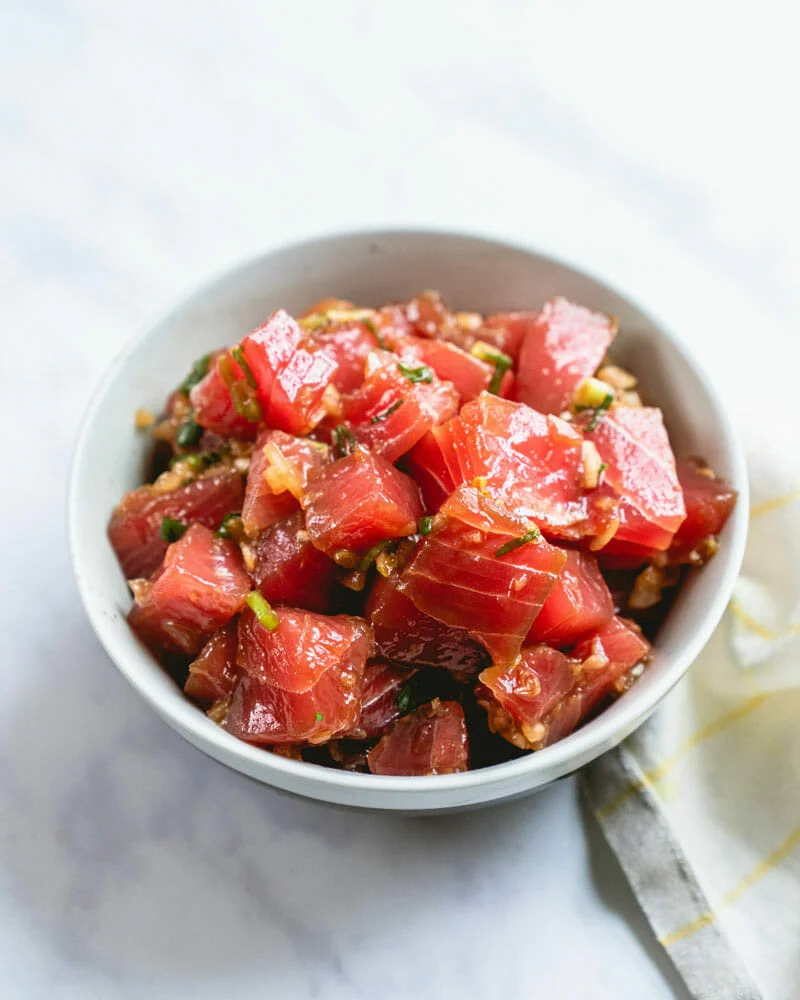

Ahi Tuna Poke

Ingredients
- 2 Ahi Tuna Filets
- 1/2 Soy Sauce
- 1/2 tbsp Peanut Oil
- 3 tbsp Mirin
- 3 tbsp Rice Vinegar
- 2 tbsp Ginger
- 2 tbps Garlic
- Seasame Seeds
- Sugar
Steps
- Dice ahi tuna into cubes.
- Finely chop ginger and garlic.
- Mix soy sauce, peanut oil, mirin, rice vinegar and sugar to taste.
- Combine ahi and soy sauce mixture.
- Place in refrigerator for ahi to marinate
- Serve with a salad or over white Rice.